お題は架空の温泉街の「湯めぐり」アプリ。UI の指示は「すべて任せる」だけにして、同じ依頼文を 3 回出した。1 回目の比較で分かった弱点を Skill に反映したのが版 0.2。
試行は各 1 回。判定は画面写真と設計メモを見比べたもので、実際の利用者による評価ではない。
| お題 | 架空の温泉街「湯乃花温泉」の湯めぐりアプリ。外湯 6・お店 4。行く前 → 当日 → 帰ったあと、お店の人の画面 1 つ、デモ用の場面切替 |
|---|---|
| 技術 | React + TypeScript + Vite。サーバーなし、外部の素材なし |
| UI の指示 | 「画面構成・色・書体・文言・操作の流れはすべて任せる」。依頼文は 3 回とも同じ |
| ちがい | Skill を呼ばずに作る ／ 版 0.1 を使う ／ 版 0.2 を使う |
| 場所 | 元のアプリ（ひとめぐり）のプロジェクトの外の空フォルダ。既存コードと設計メモは見えない |
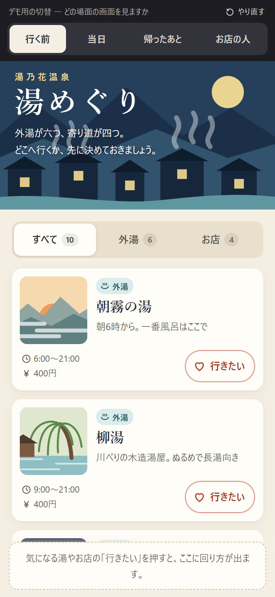
題字の絵で世界観が伝わる。上半分が切替と飾りで埋まり、下タブがない。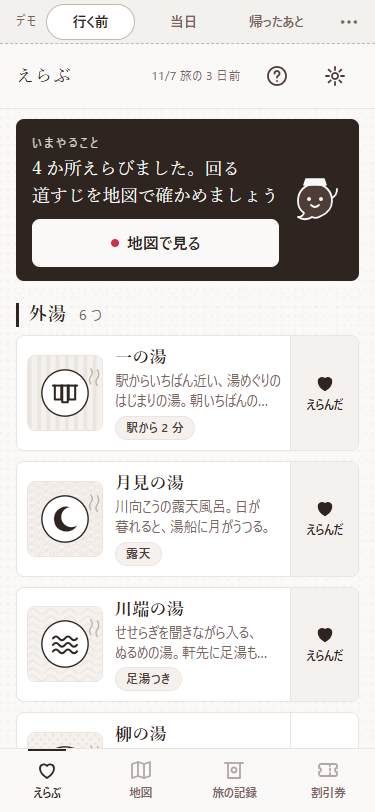
「いまやること」と下タブで迷わない。色は茶 1 色で、絵は紋だけ。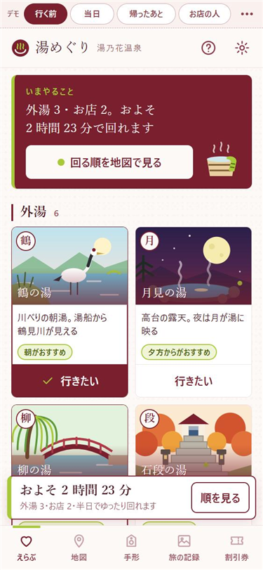
えんじに若草が映える。場所ごとの絵と一文字の印。選ぶと「およそ 2 時間 23 分」が出る。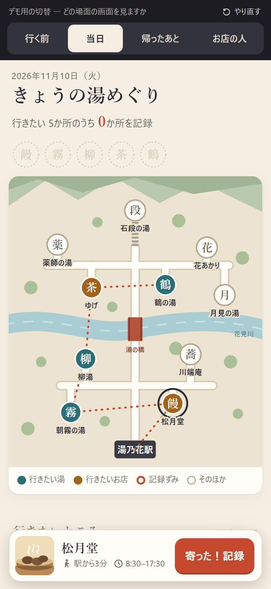
色つきの地図と漢字のピンで見分けやすい。次の行き先は自分で読み取る。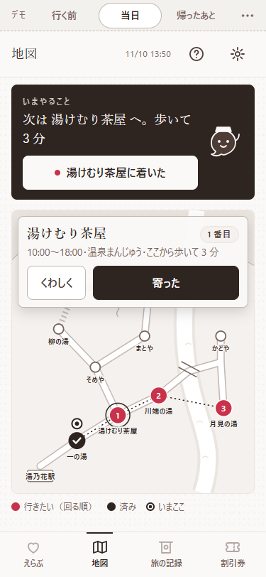
「次は○○へ。歩いて 3 分」と示す。地図は線だけで色がない。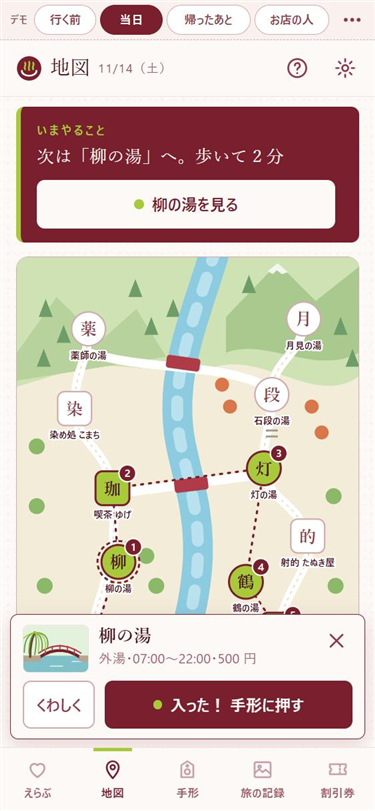
行き先の案内に加え、色つきの地図、一文字と順番つきのピン。ポップアップが下のピンに少し重なる。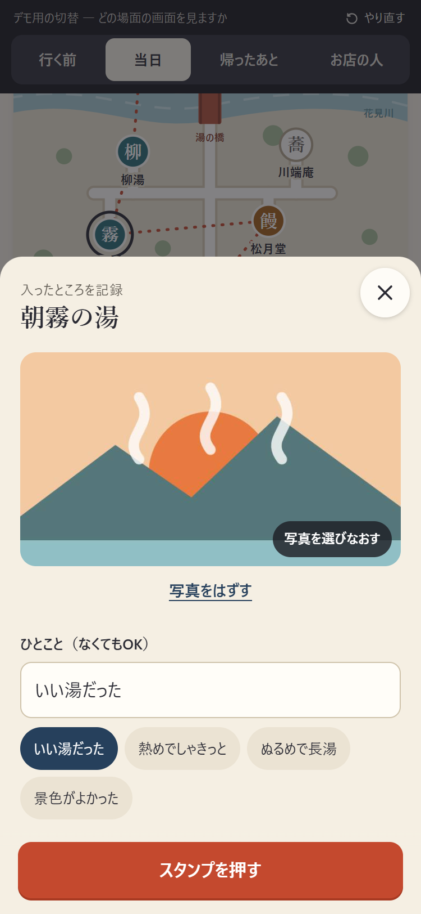
絵は描き分けられている。主ボタンがいちばん下。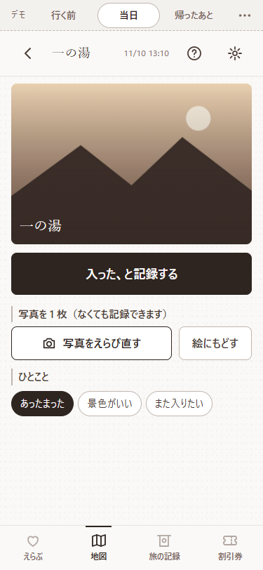
専用の画面で、主ボタンが絵のすぐ下。絵は単色。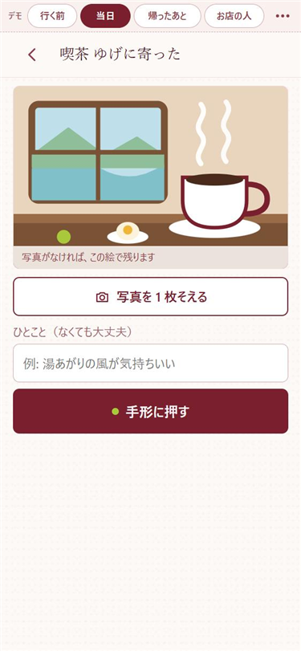
専用の画面に、その場所らしい色つきの絵。写真がなければ絵で残る。主ボタンは入力欄の下。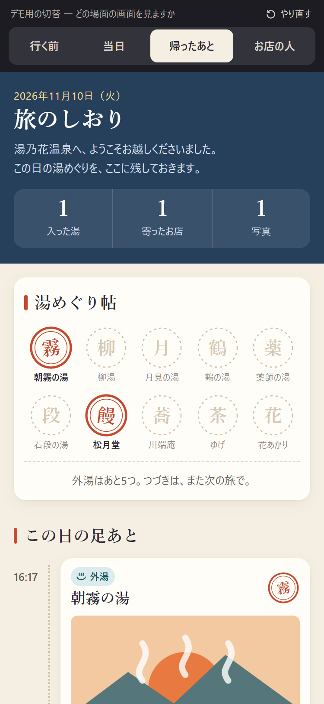
押していない枠を点線で残し、「あと 5 つ」と見せる。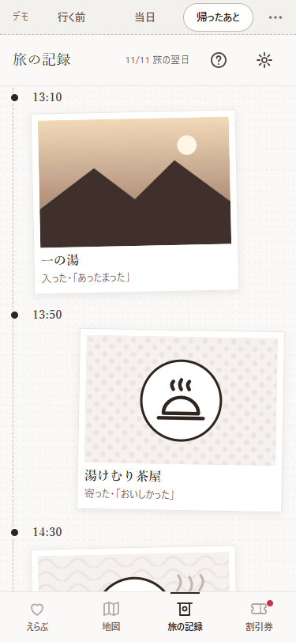
ポラロイドふうの記録。残りがいくつかは見えにくい。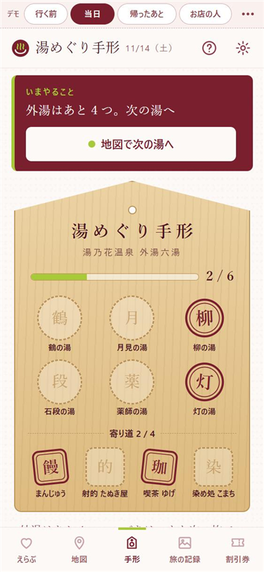
木の「湯めぐり手形」。空き枠と進み具合の棒、「外湯はあと 4 つ」。この題材ならではの見せ方になった。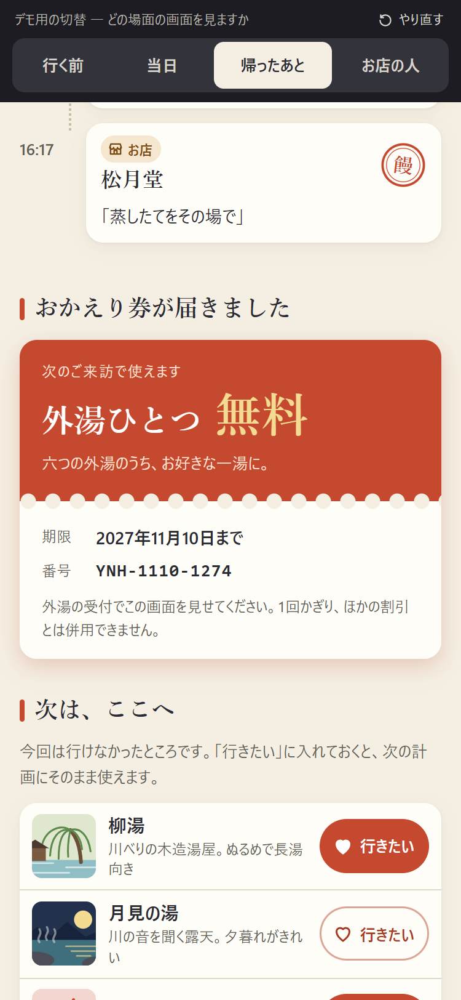
朱色で目を引く。見返す画面の続きに出る。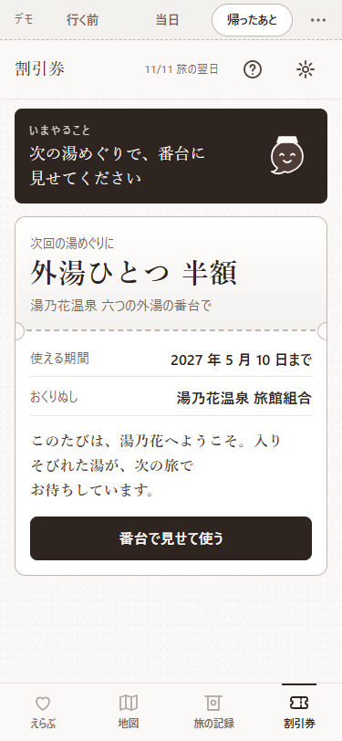
独立したタブで、使い方が明確。色がなく券らしさが弱い。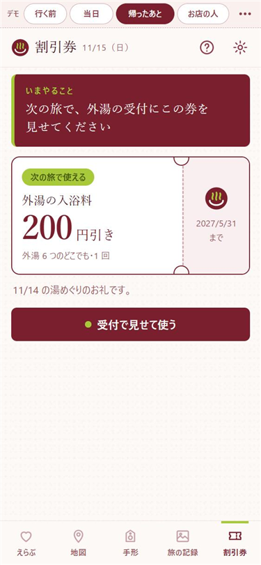
独立したタブ。若草の札と大きな数字で、何の券かが一目で分かる。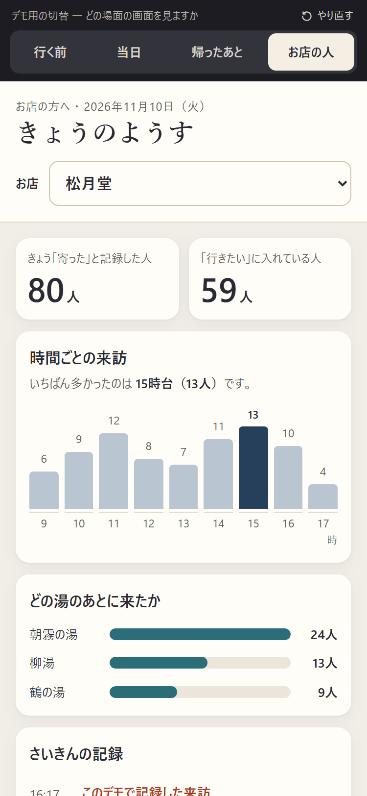
数字とグラフから始まる。何をすればいいかは示されない。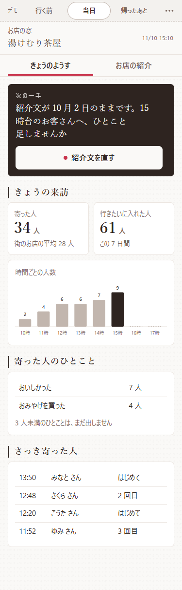
「次の一手」から始まる。平均と比べ、3 人未満は出さない。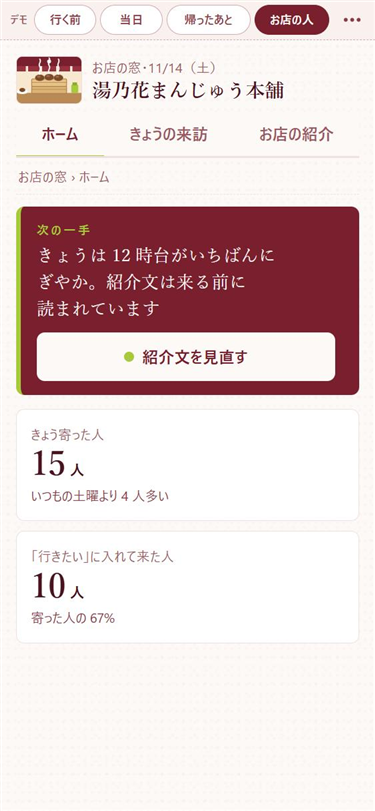
「次の一手」から始まる。「いつもの土曜より 4 人多い」と平均と比べる。| 観点 | Skill なし | Skill 0.1 | Skill 0.2 |
|---|---|---|---|
| 次にやることが分かる | △画面ごとに読み取る | ◎全タブに「いまやること」 | ◎全タブに「いまやること」 |
| 画面の行き来 | △常設の移動手段がない | ◎下タブ 4 つ | ◎下タブ 5 つ |
| 主ボタンに届きやすい | ○シートでは最下部 | ◎絵のすぐ下 | ○記録画面は入力欄の下 |
| お店の人の画面 | ○数字の一覧 | ◎提案から始まる | ◎提案から始まる |
| 設定・使い方 | ×なし | ◎あり | ◎あり |
| 配色のめりはり | ○色は多いが、まとまりは弱い | △茶 1 色でのっぺり | ◎えんじと若草の対比 |
| 絵の豊かさ・世界観 | ◎場所ごとの風景 | △単色の記号 | ◎場所ごとの風景と手形 |
| 場所の見分けやすさ | ◎漢字一文字のピン | ○紋と番号 | ◎一文字の印を全画面で共通に |
| また来たくなる仕掛け | ◎空き枠と「あと 5 つ」 | ○計画への案内 | ◎手形の空き枠と「あと 4 つ」 |
| 行く前の安心感 | ◎所要時間を出す | ○回る順の番号 | ◎所要時間と回る順 |